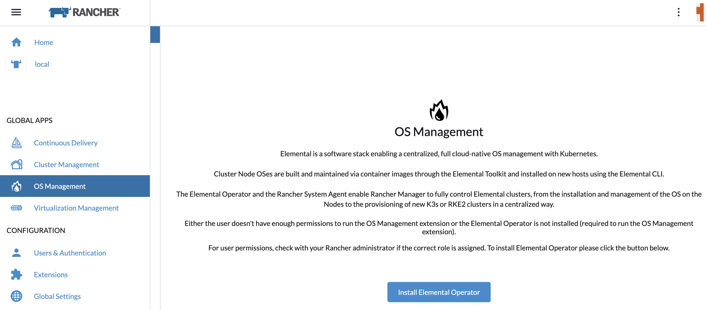
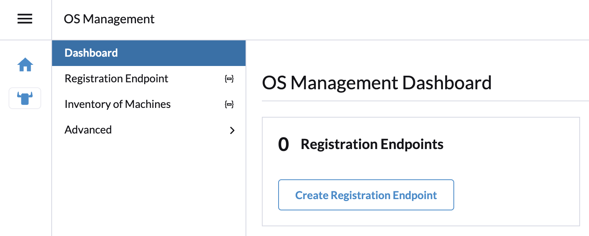
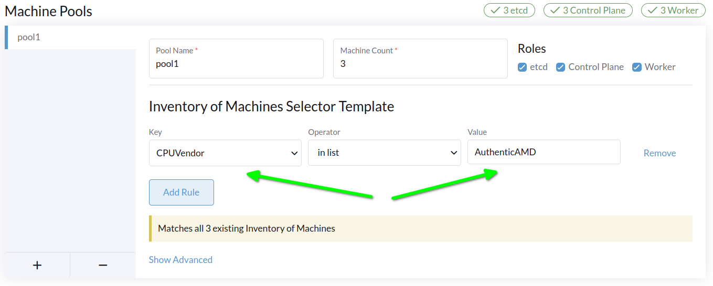

|
Este documento ha sido traducido utilizando tecnología de traducción automática. Si bien nos esforzamos por proporcionar traducciones precisas, no ofrecemos garantías sobre la integridad, precisión o confiabilidad del contenido traducido. En caso de discrepancia, la versión original en inglés prevalecerá y constituirá el texto autorizado. |
SUSE® Rancher Prime: OS Manager la forma visual
|
Las siguientes instrucciones requieren al menos Rancher 2.9.x. |
Este inicio rápido te mostrará cómo desplegar el complemento y operador SUSE® Rancher Prime: OS Manager en una instancia existente de Rancher Manager.
Una vez instalado, podrás aprovisionar un nuevo clúster SUSE® Rancher Prime: OS Manager basado en RKE2 o K3s.
Sin embargo, si deseas instalar el operador de staging o dev, solo puedes hacerlo en modo CLI.
Añadir el repositorio oficial de extensiones de Rancher
Si la extensión Elemental no está disponible, necesitas añadir el Official Rancher Extensions Repository:

Si este repositorio no se puede añadir a través de la configuración de la UI de Extensiones, se puede gestionar manualmente añadiendo el repositorio https://github.com/rancher/ui-plugin-charts git, o alternativamente aplicando el siguiente recurso:
apiVersion: catalog.cattle.io/v1
kind: ClusterRepo
metadata:
name: rancher-ui-charts
spec:
gitBranch: main
gitRepo: https://github.com/rancher/ui-plugin-chartsInstalar el complemento elemental
Después de habilitar el Soporte de Extensiones de Rancher Manager, puedes instalar el complemento elemental de la siguiente manera:
-
Bajo la pestaña
Availableverás el complementoelementaldisponible

|
Si la pestaña |
-
Haz clic en el botón
Install, aparecerá un popup y haz clic enInstallde nuevo para continuar.

-
En la pestaña
Installed, el complementoelementalahora está listado.
|
Si el complemento |
Una vez que el elemental plugin esté instalado, podrás ver la opción OS Management en el menú del Rancher Manager, actualiza la página si no la ves.

Instala el operador elemental
|
La siguiente guía te mostrará cómo instalar el operador a través de la interfaz de usuario SUSE® Rancher Prime: OS Manager. Pero también puedes instalarlo directamente desde el Marketplace. |
Haz clic en el botón de Gestión de OS en el menú de navegación.
Si el operador no está ya instalado, la interfaz de usuario elemental te permitirá desplegarlo haciendo clic en el botón Install SUSE® Rancher Prime: OS Manager Operator:

Te redirigirá al Marketplace de Rancher para instalar el operador.
Haz clic en el botón Next:

En esta pantalla, puedes personalizar o usar los valores predeterminados, haz clic en Install para continuar:

Deberías ver elemental-operator-crdsy elemental-operator desplegados en el espacio de nombres cattle-elemental-system:

|
Si no los ves, asegúrate de seleccionar el espacio de nombres correcto en la parte superior de la página. |
Añadir un endpoint de registro de máquina
En el panel de Gestión de OS, haz clic en el botón Create Registration Endpoint.

Ahora, aquí puedes introducir cada detalle en sus respectivos lugares o editarlo en YAML para crear el endpoint de una vez. Aquí editaremos todos los campos.

|
Opciones principales
|
Una vez que crees el endpoint de registro de máquina, debería aparecer como activo.

Preparando la imagen de instalación (de semilla)
Ahora este es el último paso, necesitas preparar una imagen de semilla que incluya la configuración de registro inicial, para que pueda ser registrada automáticamente, instalada y completamente desplegada como parte de tu clúster. El contenido del archivo no es más que la URL de registro que el nodo necesita para registrarse y el certificado de servidor adecuado, para que pueda conectarse de forma segura.
Esta imagen de semilla puede ser utilizada para aprovisionar un número infinito de máquinas.
La imagen de semilla se crea como un recurso de Kubernetes y puede ser construida utilizando el botón Build Media, pero primero, tienes que seleccionar una imagen ISO o RAW.
A diferencia de la ISO, donde necesita dos dispositivos (dispositivo con ISO y otro disco donde instalar SUSE® Rancher Prime: OS Manager), la imagen RAW permite arrancar desde un solo dispositivo e instalar directamente el sistema operativo en el dispositivo. La imagen RAW solo contiene una partición de arranque y una de recuperación y arranca primero en modo de recuperación para instalar SUSE® Rancher Prime: OS Manager (para información, el proceso es similar al reset).

Una vez que la construcción esté completa, los medios pueden ser descargados utilizando el botón Download Media:

Ahora puedes arrancar tus nodos con esta imagen y lo harán:
-
Regístrate con la URL de registro proporcionada y crea un
MachineInventorypor máquina. -
Instala SLE Micro en el dispositivo dado.
-
Reiniciar
Inventario de Máquinas
Cuando los nodos se inician por primera vez, se conectan a Rancher Manager y se crea un Machine Inventory para cada nodo.

Las columnas personalizadas se basan en Machine Inventory Labels que puedes añadir cuando creas tu Machine Registration Endpoint:

En la siguiente captura de pantalla, Hardware Labels se utilizan como columnas personalizadas:
También puedes añadir columnas personalizadas haciendo clic en el menú de tres puntos.

Finalmente, también puedes filtrar tu Machine Inventory utilizando esas etiquetas.
Por ejemplo, si solo quieres ver tus máquinas AMD, puedes filtrar en CPUModel como se muestra a continuación:

Crea tu primer SUSE® Rancher Prime: OS Manager Clúster
Ahora vamos a utilizar esos Machine Inventory para crear un clúster haciendo clic en Create SUSE® Rancher Prime: OS Manager Cluster :

Para tu clúster SUSE® Rancher Prime: OS Manager, puedes elegir K3s o RKE2 para Kubernetes.

La mayoría de las opciones provienen de Rancher, por eso no detallaremos todas las posibilidades. No dudes en consultar la documentación de configuración de distribución K3s de Rancher Manager o la documentación de configuración de distribución RKE2 de Rancher Manager si quieres saber más.
Sin embargo, es importante destacar la sección Inventory of Machines Selector Template.
Te permite elegir qué Machine Inventory quieres utilizar para crear tu clúster SUSE® Rancher Prime: OS Manager utilizando el Machine Inventory Labels previamente definido:

Como nuestros tres Inventarios de Máquinas contienen la etiqueta CPUVendor con la clave AuthenticAMD, las tres máquinas se utilizarán para crear el clúster SUSE® Rancher Prime: OS Manager.